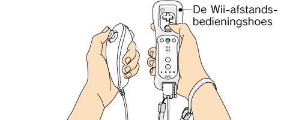

3 |
Controller-instellingen |
 |
De manier waarop je de Controllers vasthoudt, is afhankelijk van de accessoires die al dan niet worden gebruikt in combinatie met de

Opmerking: raadpleeg altijd de handleiding van de Controller die je gebruikt.


Opmerking: als de zekering van je Wii-polsbandje een zekeringslipje heeft, druk het dan in tot het op zijn plaats ‘klikt’. Hiermee voorkom je dat de zekering van het Wii-polsbandje losraakt.
Als bij het aanzetten van het Wii-systeem of bij het aansluiten van de Controller op de
* De neutrale positie is de positie waarin de knoppen zich bevinden wanneer deze niet worden ingedrukt, en de richtingsstick zich bevindt wanneer deze niet wordt gekanteld.
|
 ,
,  ,
,  en
en  op de aangesloten
op de aangesloten  |
 |
 |